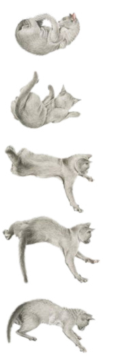

Мышцы и особенности плеча
Основной функцией мышц является обеспечение возможности движения для всех частей тела кошки. Существует два типа мышц - поперечнополосатые и гладкие. Гладкие мышцы находятся во внутренних органах, таких как кишечник, желудок, мочевой пузырь. Они не контролируются кошкой, функционируя "самостоятельно". Их работа автоматически регулируется таким образом, чтобы удовлетворить потребности организма. Поперечнополосатые мышцы преимущественно прикреплены к скелету. Все их движения находятся под сознательным контролем кошки. Они обеспечивают движение всех частей тела, позволяя совершать такие действия, как, например, ходьба, еда, виляние хвостом, поворот глаз и т.д.

Мышцы крепятся к костям жесткой волокнистой тканью, называемой сухожилиями. Сухожилия начинаются на мышцах, а заканчиваются на кости. Хорошим примером является ахиллово сухожилие, которое, соединяя мышцы нижней задней конечности (икроножная мышца) с костью, формирует лодыжки.
Связки связывают кости между собой, и обычно находятся в суставах. Сустав - это места, где встречаются две кости, в этом месте кости покрыты гладким хрящевым слоем. Сустав составляют кости, мышцы, связки, хрящи и смазочная суставная жидкость, заключенные в суставной капсуле (сумке).
Плечевой пояс у кошек очень своеобразен. Передние конечности связаны с туловищем мышцами. У человека плечо и грудина связаны ключицей. А у кошки она находиться в свободном полете и закреплена только мышцами. Именно поэтому кошке так легко переворачиваться на лапы во время падения и использовать скользящий шаг. Кошки ходят используя, как толчковую, задние ноги. Передние используются, как тормоз и амортизатор. Во время пробежки кошка использует следующую технику: перенос левой передней ноги одновременно с правой задней и в т.д.
Эластичные мышцы спины дают кошке возможность закручиваться в клубок или выворачивать тело при прыжке. Нападая на добычу, кошка пружинит задними ногами, выгибает спину и кидается передними лапами вперед. Специальное развитие мышц на запястьях дает кошке ловкость в повороте в различных направлениях для охоты или карабканья. Прыжок вверх кошка делает очень точно. Кошка может оценить дальность расстояния и точно сопоставить к ней силу толчка задних лап. Данный прыжок отличен от незапланированных прыжков во время преследования. Мышцы разгибатели лап работают синхронно, и кошка прыгает как пружина.
То, насколько хорошо сможет кошка перевернуться в воздухе, зависит от ее зрения, вестибулярного аппарата, подвижности позвоночника и работоспособности мышц. При падении с высоты четырех - девятиэтажного здания кошки зачастую погибают. Потому что скорость падения развивается высокая и сила удара с землей значительная. Интересный феномен возникает при падении кошки с более высокого места - кошка успевает принять позу наиболее комфортную для снижения скорости. Это широко расставленные лапы и запрокинутая кверху голова.
Рефлекс, который позволяет кошке переворачиваться в воздухе при свободном падении, зависит от гибкого позвоночника, эластичной мускулатуры, острого зрения и отличного чувства равновесия.